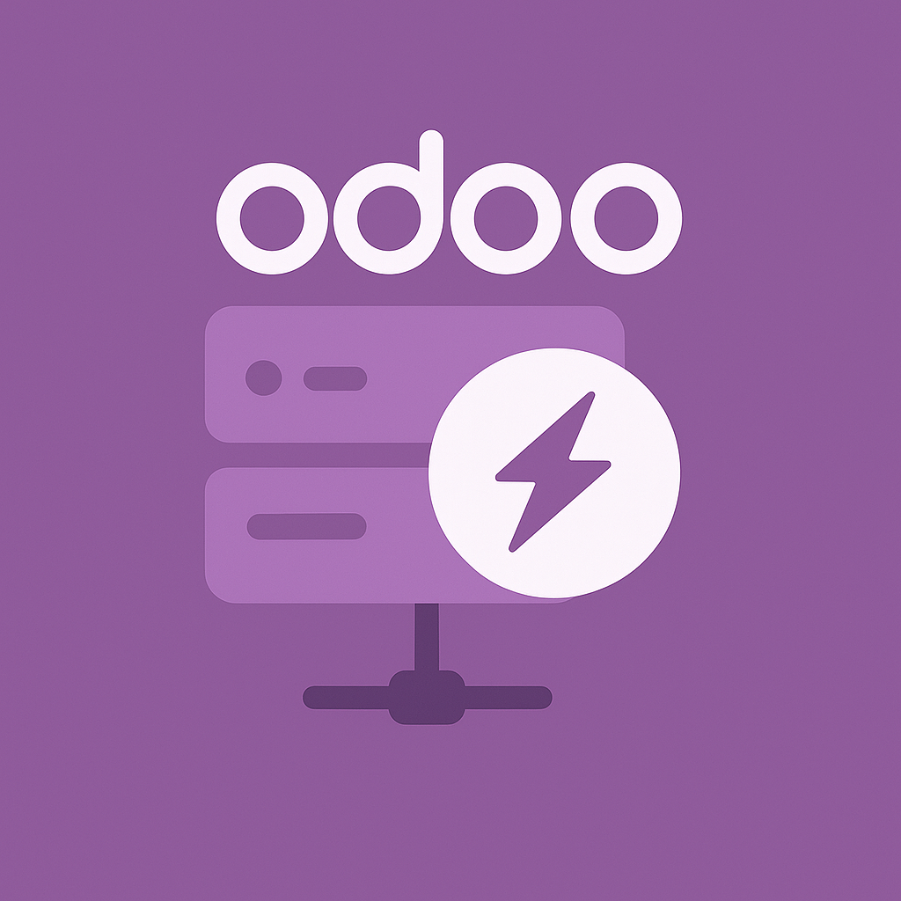
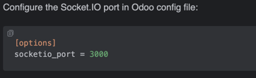
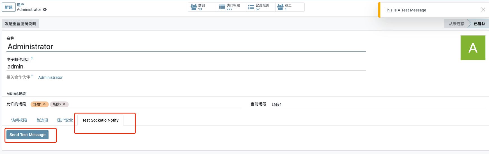

Real-time bidirectional communication for Odoo using Socket.IO technology

This module integrates Socket.IO with Odoo to enable real-time, event-based communication between the server and web clients. Perfect for building interactive features like live notifications, chat systems, and real-time updates.
Instant message delivery between server and clients using WebSocket technology.
Target messages to specific users with built-in user connection management.
Organize communication channels with room-based messaging.
Simple JavaScript API for client-side integration with existing Odoo views.

